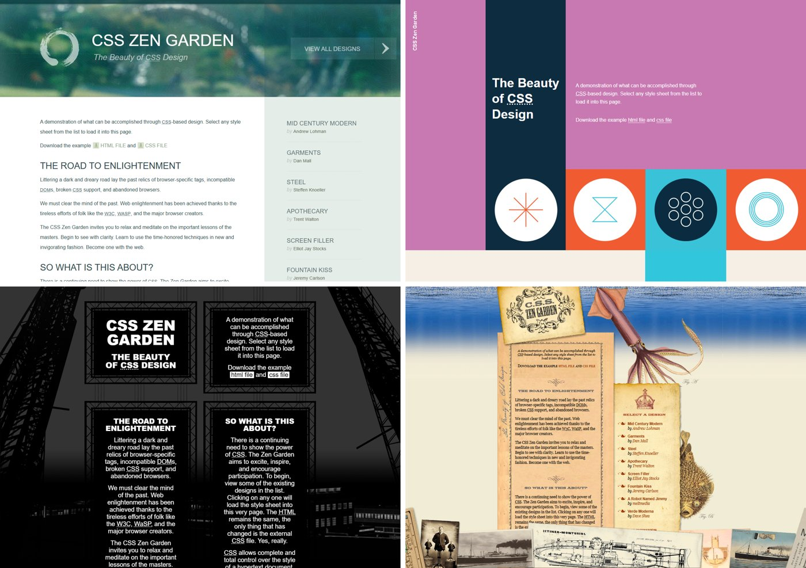
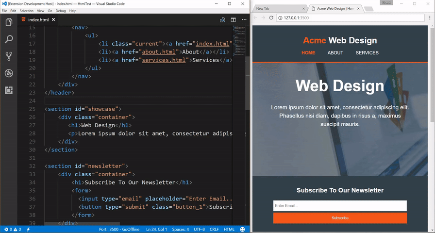
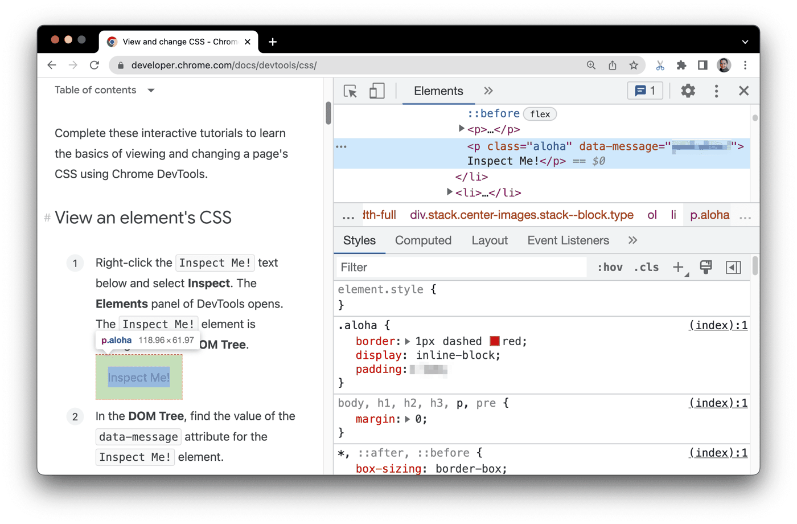
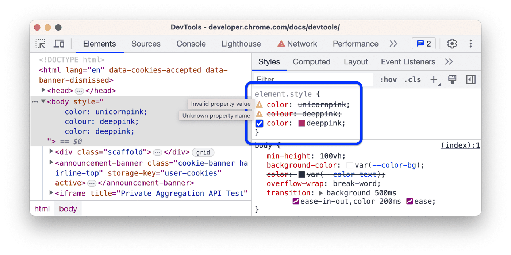
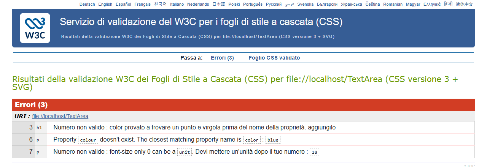
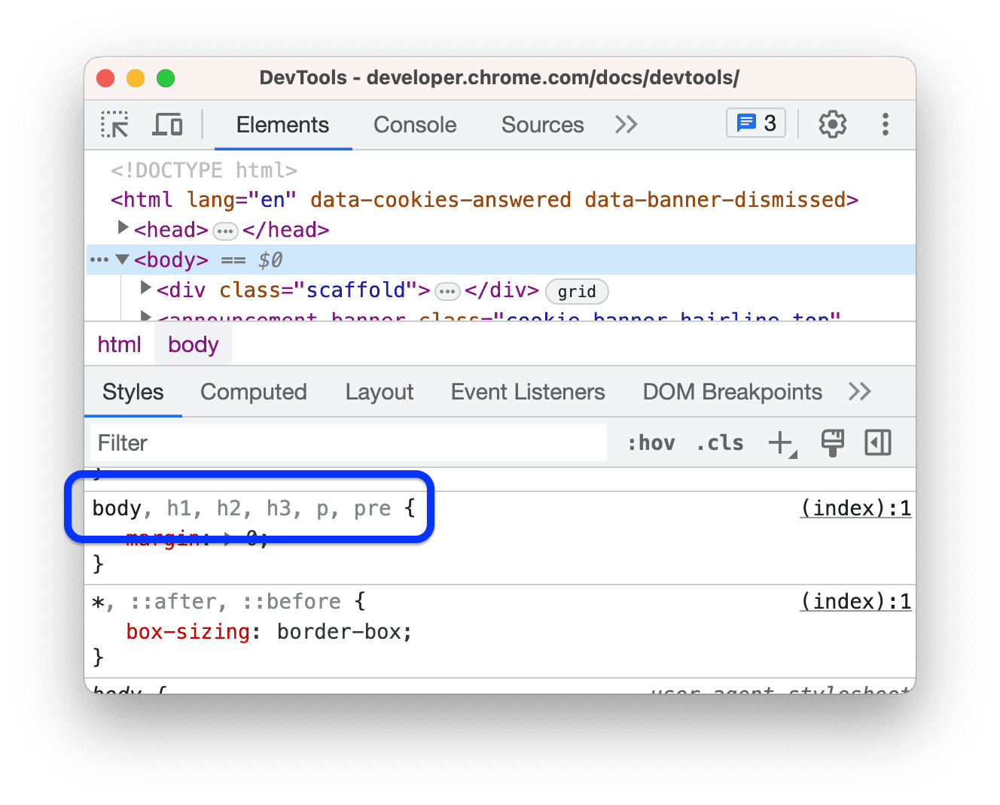
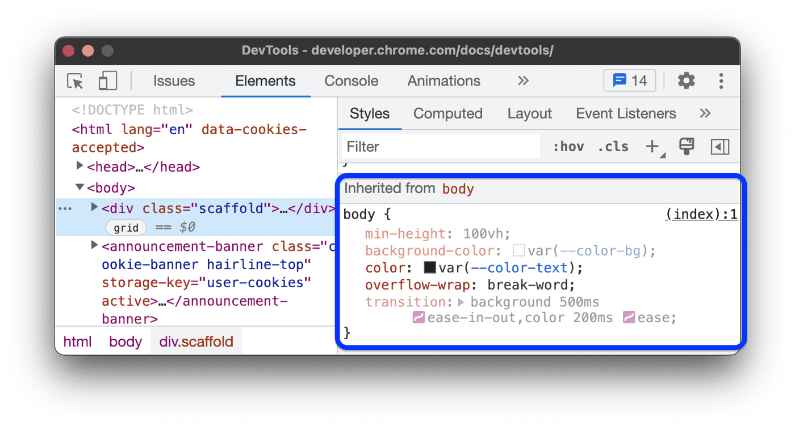

CSS: introduzione
5.1Che cos’è il CSS e come si collega
A cosa serve il CSS
Una pagina non ha nemmeno una riga di CSS. Perché allora il titolo è grande e in grassetto e il link è blu e sottolineato?
Nei capitoli sull’HTML abbiamo descritto che cos’è ogni parte di una pagina: questo è un titolo, questo un paragrafo, questo un elenco, questo un link. Non abbiamo mai detto di che colore deve essere il titolo, con quale carattere va scritto il paragrafo o quanto spazio deve esserci tra un elenco e l’altro. Di questo si occupa un secondo linguaggio.
Il CSS (Cascading Style Sheets, «fogli di stile a cascata») è il linguaggio che decide come appare una pagina web: colori, caratteri, dimensioni, spazi, impaginazione. In breve: l’HTML dà il significato, il CSS la presentazione.
Eppure anche una pagina senza una riga di CSS ha un aspetto. Il browser applica il suo foglio di stile predefinito (user agent stylesheet): titoli grandi e in grassetto, link blu e sottolineati, un po’ di margine intorno al testo. Per questo tutte le pagine senza CSS si somigliano. Il nostro CSS parte da lì e lo modifica.
Tenere separati significato e presentazione, in due linguaggi e di solito in due file, ha tre vantaggi. Il primo è la manutenzione: per cambiare l’aspetto si modifica il foglio di stile, senza toccare il contenuto delle pagine. Il secondo è la coerenza: tutte le pagine che usano lo stesso foglio di stile hanno gli stessi colori, caratteri e spazi. Il terzo è il riuso: una regola scritta una volta vale per tutti gli elementi a cui si applica, in tutte le pagine.
Nel widget qui sotto la stessa pagina HTML cambia aspetto solo cambiando il foglio di stile.

L’esempio più famoso di questa idea è il CSS Zen Garden (csszengarden.com): una sola pagina HTML, sempre la stessa, e centinaia di fogli di stile diversi scritti da designer di tutto il mondo. Cambiando solo il CSS, la stessa pagina diventa un giardino giapponese, un manifesto a colori, una struttura d’acciaio, una pergamena in fondo al mare.
Il sito è nato nel 2003 per dimostrare che con il CSS si poteva fare grafica vera senza toccare l’HTML; è ancora online e ogni progetto si può scaricare per vedere come è fatto. Resta da capire dove si scrive, concretamente, questo CSS e come si aggancia alla pagina.
I quattro modi di collegare il CSS
Il CSS si può collegare all’HTML in quattro modi, che si distinguono per quanta parte del sito raggiungono. Il più piccolo è l’attributo style su un singolo elemento, come <h1 style="color: red">: vale solo per quell’elemento. Poi c’è l’elemento <style> dentro <head>: le regole che contiene valgono per tutta la pagina, ma solo per quella.
Il terzo modo è il file esterno: un file .css che contiene solo regole e che si collega con <link rel="stylesheet" href="stile.css"> dentro <head>. Tutte le pagine del sito possono collegare lo stesso file. Il quarto è @import: una riga all’inizio di un foglio di stile che ne carica un altro, per esempio @import url("colori.css");.
La stessa regola (titolo rosso) nei quattro modi
index.html<h1 style="color: red">
Club di robotica
</h1>
vale per un elementoindex.html<head>
<style>
h1 { color: red; }
</style>
</head>
vale per una paginaindex.html<head>
<link rel="stylesheet"
href="stile.css">
</head>
stile.cssh1 { color: red; }
vale per tutte le pagine che lo colleganostile.css@import url("titoli.css");
titoli.cssh1 { color: red; }
il secondo file arriva dopo il primoPer un sito si usa il file esterno. Tutte le pagine lo collegano, e una modifica fatta in un punto vale ovunque. In più il browser scarica il file una volta e lo tiene in memoria (cache) per le pagine successive, che quindi si aprono più in fretta. Gli altri modi hanno usi più ristretti: l’attributo style rimescola aspetto e contenuto e va ritoccato tag per tag; <style> va bene per una pagina isolata o per una prova veloce.
@import funziona, ma si evita, e il motivo sta nell’ordine in cui arrivano i file.
Il browser scopre il secondo file solo dopo aver scaricato e letto il primo: i file arrivano uno dopo l’altro invece che insieme, e la pagina compare più tardi. Se servono più fogli di stile, si scrivono più <link>, che partono tutti insieme.
Errore tipico
«Nel file stile.css devo scrivere anche il tag <style>.»
Il file esterno contiene solo regole CSS. <style> è un elemento HTML: serve solo per scrivere il CSS dentro una pagina HTML. In un file .css un tag non è CSS valido e la regola che lo segue viene scartata.
Gli strumenti di lavoro
Una volta scritto il foglio di stile, bisogna vederne l’effetto e, quando qualcosa non torna, capire perché. Per scrivere CSS bastano un editor e un browser. In classe usiamo Visual Studio Code (VS Code) con l’estensione Live Server, che apre la pagina nel browser e la ricarica da sola a ogni salvataggio: si vede subito l’effetto di ogni modifica. Due estensioni facoltative: Prettier, che riordina il codice, e CSS Peek, che dall’HTML porta alla regola di una classe.

Per capire come il browser ha interpretato la pagina ci sono gli strumenti per sviluppatori (DevTools), che si aprono con il tasto F12 oppure con tasto destro › Ispeziona. Il pannello Elementi (Elements) mostra l’albero degli elementi della pagina: passando sopra a un elemento, quello si illumina nella pagina. Accanto, la scheda Stili (Styles) elenca tutte le regole che si applicano all’elemento scelto, con il file e la riga da cui vengono; le dichiarazioni battute da altre sono barrate. La scheda Calcolati (Computed) mostra infine il valore finale di ogni proprietà, quello che il browser usa davvero.

.aloha (bordo tratteggiato rosso, display, padding) e, accanto, il file e la riga da cui viene. Osservare a sinistra l’elemento «Inspect Me!» illuminato nella pagina.Nei DevTools si possono anche cambiare i valori in diretta e vedere subito il risultato: è il modo più veloce per fare prove. Ma la modifica vive solo nella copia della pagina che c’è nel tuo browser: non viene salvata in nessun file e sparisce al ricaricamento.
Errore tipico
«Ho cambiato il colore nei DevTools del sito della scuola: ora lo vedono tutti.»
È cambiato solo nella copia della pagina che c’è nel tuo browser. Il file sul server non è stato toccato: gli altri vedono il sito come prima, e anche tu lo rivedi come prima appena ricarichi.
Cambiate il colore del titolo del sito della scuola nei DevTools e poi premete F5. Che cosa succede? Il compagno di banco vede il nuovo colore?
Con l’editor per scrivere e i DevTools per controllare abbiamo tutto quello che serve. Ora possiamo guardare da vicino come è fatto il CSS che scriviamo.
5.2La sintassi
Anatomia di una regola
Un foglio di stile è un elenco di regole, e ogni regola risponde a due domande: a chi si applica e come deve apparire. Prendiamo la regola che rende blu scuro e grande il titolo principale:
h1 {
color: navy;
font-size: 32px;
}All’inizio c’è il selettore, h1, che sceglie gli elementi a cui la regola si applica: qui tutti i titoli di primo livello. Segue, tra parentesi graffe { }, il blocco di dichiarazioni, che contiene le istruzioni. Ogni dichiarazione è una coppia proprietà: valore;: la proprietà (color) dice che cosa cambiare, il valore (navy) dice come. I due punti separano proprietà e valore, il punto e virgola chiude la dichiarazione.
Anatomia di una regola
I nomi delle proprietà si scrivono in minuscolo e, se sono fatti di più parole, le parole sono unite da un trattino: font-size, background-color, text-align. L’ultimo punto e virgola prima della graffa si potrebbe omettere, ma conviene scriverlo sempre: quando si aggiunge una riga sotto, non lo si dimentica.
Errore tipico
«Le proprietà si scrivono come in Java: fontSize.»
In CSS si scrive font-size, minuscolo con il trattino; fontSize non esiste e viene ignorata. La forma con la maiuscola in mezzo (camelCase) si usa solo quando si cambia lo stile da JavaScript (cap. 8).
Commenti e formattazione
Una regola si può scrivere in modo che il browser la capisca, ma anche in modo che la capisca una persona: chi la rilegge tra un mese, o un compagno che lavora allo stesso sito. A questo servono i commenti e la formattazione.
Un commento si scrive tra /* e */, anche su più righe, e il browser lo ignora. È l’unico commento del CSS: la doppia barra //, comune in JavaScript e in Java, qui non esiste. I commenti inoltre non si possono annidare: il primo */ chiude il commento, anche se dentro ce n’era un altro aperto.
Tra /* e */, anche su più righe: il browser lo ignora.
/* Titoli della pagina */La doppia barra viene da JavaScript e Java: in CSS il testo finisce nel selettore e la regola viene scartata.
// Titoli della paginaUn uso pratico durante le prove: commentare una dichiarazione per disattivarla, senza cancellarla.
Nella regola qui sotto la vecchia dimensione del titolo, 40px, è disattivata da un commento: resta lì, pronta per essere rimessa, ma il browser usa solo 32px.
/* Titoli della pagina */
h1 {
color: navy;
/* font-size: 40px; */
font-size: 32px;
}Spazi, a capo e rientri non cambiano nulla per il browser, ma servono a chi legge. La convenzione è una dichiarazione per riga, rientrata di due o quattro spazi, la graffa di chiusura su una riga sua e una riga vuota tra una regola e l’altra.
I fogli di stile pubblicati sono invece spesso compressi (minified): tutto su una riga, senza spazi né commenti, per pesare meno. Si leggono male, ma il browser li interpreta esattamente come la versione ordinata. Non si scrivono a mano: li produce un programma, partendo dal file ordinato.
Lo stesso CSS scritto in tre modi
h1 { color: navy; font-size: 32px; } p { color: #333; line-height: 1.5; }/* Titoli */
h1 {
color: navy;
font-size: 32px;
}
p {
color: #333;
line-height: 1.5;
}h1{color:navy;font-size:32px}p{color:#333;line-height:1.5}Scrivo // ricordati di cambiare il colore sopra la regola dei titoli. La regola funziona ancora?
Proprietà abbreviate
Scrivere una dichiarazione per ogni dettaglio può diventare lungo: per dare un margine ai quattro lati di un elemento servirebbero quattro righe. Per questo alcune proprietà ne raggruppano altre: sono le proprietà abbreviate (shorthand). margin imposta in un colpo solo margin-top, margin-right, margin-bottom e margin-left; border imposta spessore, stile e colore del bordo; font lo stile, il peso, la dimensione, l’interlinea e la famiglia del carattere; background il colore, l’immagine, la posizione e la ripetizione dello sfondo.
margin e padding accettano da uno a quattro valori, letti in senso orario a partire dall’alto, come le lancette dell’orologio. Con un valore solo, quello vale per tutti e quattro i lati; con due, il primo vale sopra e sotto, il secondo a destra e a sinistra; con tre, il primo vale sopra, il secondo a destra e a sinistra, il terzo sotto; con quattro, si va sopra, destra, sotto, sinistra.
margin: 10px· 10px su tutti e quattro i latimargin: 10px 30px· 10px sopra e sotto, 30px a destra e a sinistramargin: 10px 30px 50px· 10px sopra, 30px a destra e a sinistra, 50px sottomargin: 10px 20px 30px 40px· sopra, destra, sotto, sinistra
La comodità ha però un prezzo: una proprietà abbreviata imposta tutte le sue proprietà, anche quelle che non scrivi, e quelle mancanti tornano al loro valore iniziale.
background: url(foto.jpg)c’è un’immagine⟶poibackground: red⟶risultatosfondo rossol’immagine sparisceAlcune parti, poi, sono obbligatorie. border senza lo stile (solid, dashed, dotted…) non disegna niente, perché lo stile iniziale è none. font senza dimensione e famiglia non è valida e viene scartata. Per cambiare una cosa sola, conviene la proprietà estesa: background-color: red cambia il colore e lascia stare l’immagine.
| Abbreviata | Equivale a | Attenzione |
|---|---|---|
border: 2px solid red | border-width: 2px · border-style: solid · border-color: red | senza lo stile il bordo non si vede |
font: italic bold 18px/1.5 Georgia, serif | font-style · font-weight · font-size/line-height · font-family | dimensione e famiglia obbligatorie, in quest’ordine, in fondo |
background: #eee url(foto.jpg) no-repeat center | background-color · background-image · background-repeat · background-position | ciò che manca torna al valore iniziale |
margin: 10px 30px 50px | margin-top: 10px · margin-right: 30px · margin-bottom: 50px · margin-left: 30px | con tre valori il secondo vale a destra e a sinistra |
Errore tipico
«border: 2px red disegna un bordo rosso di 2 pixel.»
Manca lo stile: il suo valore iniziale è none e il bordo non si vede. Si scrive border: 2px solid red.
Errore tipico
«font: 18px cambia la dimensione del testo.»
Nella forma abbreviata font la famiglia è obbligatoria: senza, la dichiarazione non è valida e viene scartata. Per la sola dimensione si usa font-size: 18px.
Errore tipico
«background: red cambia solo il colore di sfondo.»
La forma abbreviata imposta tutte le proprietà dello sfondo: anche l’immagine torna a none e sparisce. Per cambiare solo il colore si usa background-color: red.
Errori comuni e validatore
Dimentico il punto e virgola dopo color: red e sotto c’è font-size: 48px;. Il titolo sarà rosso, grande, tutti e due o nessuno dei due?
Gli errori della sezione precedente hanno una cosa in comune: nessuno di loro produce un messaggio. Quando incontra qualcosa che non capisce, il browser non segnala nessun errore: scarta la dichiarazione (o l’intera regola) e va avanti con il resto.
È una scelta voluta: un foglio di stile scritto con le proprietà di domani funziona anche nei browser di oggi, che ignorano soltanto ciò che non conoscono. Il prezzo è che gli errori passano in silenzio: la pagina semplicemente non ha l’aspetto voluto, e tocca a noi capire perché.
Per fortuna gli errori si possono cercare in tre posti. Il primo è l’editor: VS Code colora in modo diverso e sottolinea le proprietà sconosciute e le graffe che non tornano. Il secondo sono i DevTools: nella scheda Stili una dichiarazione non valida è barrata e ha accanto un triangolo giallo di avviso.
Il terzo è il validatore del W3C (jigsaw.w3.org/css-validator): si incolla il CSS o si carica il file, e restituisce l’elenco degli errori con il numero di riga. Il profilo predefinito è «CSS livello 3 + SVG»; conviene provarlo, ma alcune novità recenti possono risultare errori anche se i browser le capiscono.

color: unicornpink (un colore che non esiste) e colour: deeppink (la proprietà scritta all’inglese) sono barrate con il triangolo giallo; vale solo l’ultima, color: deeppink.
color (riga 3), la proprietà colour che non esiste, con il suggerimento color (riga 6), il 18 senza unità (riga 7).Ora sappiamo scrivere una regola e trovarne gli errori. La parte della regola che decide a chi si applica, il selettore, è però molto più ricca di un semplice h1.
5.3I selettori
Tipo, classe, id, universale
Il selettore h1 del tema precedente prende tutti i titoli di primo livello. Ma spesso vogliamo colorare solo alcuni elementi: tre avvisi tra trenta paragrafi, una sola immagine in tutta la pagina. Per questo esistono quattro selettori di base, che scelgono gli elementi in modi diversi.
Il selettore di tipo sceglie gli elementi per nome del tag: p prende tutti i paragrafi. Il selettore di classe sceglie gli elementi che hanno quella classe nell’attributo class: .nota prende tutti gli elementi con class="nota", qualunque sia il tag. Il selettore di id sceglie l’elemento con quell’id: #robot prende l’elemento con id="robot". Infine il selettore universale * prende tutti gli elementi.
p { line-height: 1.5; } /* tutti i paragrafi */
.nota { color: gray; } /* class="nota" */
#robot { color: crimson; } /* id="robot" */
* { box-sizing: border-box; } /* tutti gli elementi */Il punto e il cancelletto fanno parte del selettore, non del nome: nell’HTML si scrive class="nota", nel CSS .nota.
class="nota" · id="robot"⟶nel CSSselettore.nota · #robotClassi e id si comportano però in modo diverso. Un elemento può avere più classi, separate da spazi (class="card big"), e una classe si può dare a tutti gli elementi che si vuole. L’id invece è unico: nella pagina non ci possono essere due elementi con lo stesso id.
Nel widget qui sotto c’è la pagina campione del club di robotica che useremo in tutto il tema, scritta come elenco di elementi: ogni riga è un elemento, rientrato dentro il suo genitore. Scrivi un selettore, o scegli un esempio, e guarda quali elementi prende.
Errore tipico
«.titolo e titolo sono lo stesso selettore.»
Senza il punto è un selettore di tipo: cerca gli elementi <titolo>, che in HTML non esistono. Per la classe titolo serve il punto: .titolo.
Errore tipico
«Lo stesso id si può dare a più elementi che devono avere lo stesso stile.»
L’id è unico nella pagina. Per dare lo stesso stile a più elementi si usa una classe, che si può ripetere quante volte si vuole.
Raggruppare e combinare
I selettori di base si possono mettere insieme in tre modi, e la differenza sta tutta in un carattere: una virgola, nessuno spazio, oppure uno spazio o un simbolo.
La virgola crea una lista di selettori che condividono le stesse dichiarazioni: h1, h2, h3 { font-family: Georgia, serif; } vale per tutti e tre i titoli. Attenzione: se uno solo dei selettori della lista non è valido, l’intera regola viene scartata, anche per gli altri.
Più selettori scritti di seguito, senza spazio, sono condizioni sullo stesso elemento e formano un selettore composto: p.nota prende i paragrafi con la classe nota, .card.big gli elementi che hanno entrambe le classi.
.card.big · senza spazioLo stesso elemento deve avere entrambe le classi: nella pagina campione, la card «Stampa 3D».
.card .big · con lo spazioUn elemento .big dentro un .card, a qualsiasi profondità: nella pagina campione, nessuno.
Lo spazio dell’ultimo esempio è il primo dei combinatori, che collegano due selettori in base alla posizione degli elementi nell’albero della pagina:
| Combinatore | Si legge | Che cosa prende |
|---|---|---|
A B (spazio) | B discendente di A | ogni B dentro A, a qualsiasi profondità: main p |
A > B | B figlio di A | solo i B figli diretti di A: nav > a |
A + B | B fratello adiacente di A | il B subito dopo A, con lo stesso genitore: h3 + p |
A ~ B | B fratello successivo di A | tutti i B che vengono dopo A, con lo stesso genitore: h2 ~ div |
Un selettore con i combinatori si legge da destra a sinistra: l’elemento preso è sempre l’ultimo (in main p sono i p), quelli prima sono condizioni. E il CSS sceglie solo in base a ciò che sta sopra o prima nell’albero: non c’è un combinatore per «il genitore di B» o per «l’elemento che viene prima di B». Per questi casi oggi esiste :has().
Errore tipico
«.card .big e .card.big sono lo stesso selettore.»
Con lo spazio, .big deve stare dentro un .card (discendente); senza spazio, lo stesso elemento deve avere entrambe le classi. Nella pagina campione il primo non prende niente, il secondo prende la card «Stampa 3D».
Errore tipico
«Se un selettore della lista è sbagliato, funzionano comunque gli altri.»
Basta un selettore non valido nella lista perché l’intera regola venga scartata, per tutti i selettori.
.card .big e .card.big: sono lo stesso selettore?
Selettori di attributo
Spesso l’informazione che serve per scegliere un elemento c’è già nell’HTML: un link esterno ha un href che comincia con https, un link a un documento finisce con .pdf, un campo email ha type="email". I selettori di attributo scelgono gli elementi proprio in base ai loro attributi e ai loro valori, scritti tra parentesi quadre. Così si dà uno stile a tutti i link esterni o a tutti i campi email senza aggiungere classi a mano.
| Selettore | Significato | Esempio |
|---|---|---|
[attr] | l’attributo c’è, con qualunque valore | input[required] |
[attr="v"] | valore esattamente uguale a v | input[type="email"] |
[attr^="v"] | valore che inizia con v | a[href^="https"]: link esterni sicuri |
[attr$="v"] | valore che finisce con v | a[href$=".pdf"]: link ai PDF |
[attr*="v"] | valore che contiene v | a[href*="arduino"] |
[attr~="v"] | v è una delle parole del valore | [class~="big"] |
Dopo il valore si può aggiungere una i per ignorare maiuscole e minuscole: a[href$=".pdf" i] prende anche un link a PROGRAMMA.PDF.
a[href^="https"] { color: #0a6f66; } /* link esterni */
a[href$=".pdf"] { font-weight: bold; } /* link ai PDF */
input[type="email"] { border-color: #0a6f66; }Errore tipico
«[href=".pdf"] prende i link ai PDF.»
= vuole il valore esatto: prenderebbe solo un link con href=".pdf". Per «finisce con» serve $=: a[href$=".pdf"].
Pseudo-classi
Finora abbiamo scelto gli elementi per quello che sono: un tag, una classe, un attributo. Ma un link sotto il puntatore del mouse, un campo in cui si sta scrivendo, il primo elemento di un elenco non hanno niente di scritto nell’HTML che li distingua. Per sceglierli servono le pseudo-classi.
Una pseudo-classe (due punti seguiti da un nome) sceglie un elemento che esiste già nell’HTML quando si trova in un certo stato o in una certa posizione, oppure quando non soddisfa una condizione. Sono quindi tre famiglie.
Le pseudo-classi di stato dipendono da che cosa sta facendo l’utente: :hover (il puntatore è sopra), :focus (l’elemento ha il fuoco, dopo un clic o con il tasto Tab), :active (mentre lo si preme), :checked (casella spuntata), :disabled (elemento disattivato). Quelle di posizione guardano il posto dell’elemento tra i fratelli: :first-child, :last-child, :nth-child(), :nth-of-type(), :only-child (figlio unico), :empty (senza contenuto). Infine la negazione :not() prende gli elementi che non corrispondono al selettore tra parentesi, per esempio .card:not(.big).
Sugli schermi touch un vero :hover non esiste: non c’è un puntatore che passa sopra senza toccare. Le informazioni importanti non devono quindi comparire solo al passaggio del mouse.
Tra le pseudo-classi di posizione, due si confondono spesso. :nth-child() conta tutti i fratelli, di qualunque tag; :nth-of-type() conta solo i fratelli dello stesso tag.
In un div ci sono un h2 e poi tre p. p:nth-child(2) vuol dire «un p che è il secondo figlio del suo genitore»: è il primo paragrafo, perché il primo figlio è l’h2. Il secondo paragrafo si prende con p:nth-of-type(2).
Tra le parentesi si scrive un numero, una parola chiave o un’espressione con n, che vale 0, 1, 2, 3…:
| Espressione | Posizioni prese |
|---|---|
3 | solo la terza |
odd (= 2n+1) | le dispari: 1, 3, 5… |
even (= 2n) | le pari: 2, 4, 6… |
3n | una ogni tre: 3, 6, 9… |
n+3 | dalla terza in poi: 3, 4, 5… |
-n+3 | le prime tre: 1, 2, 3 |
Altre pseudo-classi arriveranno più avanti: :link e :visited con i link (6.2), :valid e :invalid con i moduli (7.5). Ne esistono altre ancora, come :is(), :where(), :has() e :focus-visible.
Errore tipico
«p:nth-child(2) colora il secondo paragrafo.»
Colora un p solo se è il secondo figlio del suo genitore, contando tutti i fratelli. Per il secondo paragrafo tra i soli paragrafi serve p:nth-of-type(2).
In un div ci sono un h2 seguito da tre p. Che cosa colora p:nth-child(2)?
Pseudo-elementi
Le pseudo-classi scelgono elementi che esistono. A volte invece vogliamo dare uno stile a qualcosa che non è un elemento: la prima lettera di un paragrafo, il testo selezionato, un’etichetta «NUOVO» che nell’HTML non c’è.
Un pseudo-elemento (con due volte i due punti, ::) sceglie una parte di un elemento, oppure crea un contenuto generato che nell’HTML non c’è. ::first-letter sceglie la prima lettera e ::first-line la prima riga di un blocco di testo; ::selection il testo selezionato dall’utente e ::placeholder il testo segnaposto di un campo. ::before e ::after, infine, creano un elemento finto all’inizio e alla fine del contenuto, che compare solo se ha la proprietà content (anche vuota: content: "").
La forma con un solo due punti (:before) è un’eredità del CSS 2 e funziona ancora, ma la regola è: due due punti per i pseudo-elementi, un due punti per le pseudo-classi.
Il contenuto generato serve a decorare: non si può selezionare né copiare e non tutti gli screen reader lo leggono. Un’informazione importante va nell’HTML.
Un’etichetta «NUOVO» accanto ai corsi appena aggiunti: è una decorazione, quindi può nascere da ::after.
.nuovo::after {
content: "NUOVO";
background: crimson;
color: white;
font-size: 0.7em;
padding: 2px 6px;
margin-left: 6px;
}Errore tipico
«::before mette l’icona anche senza content.»
Senza la proprietà content il pseudo-elemento non viene creato e non appare nulla, qualunque altra proprietà gli si dia.
Differenza tra classe e id, tra pseudo-classe e pseudo-elemento
Con tanti selettori nuovi, due coppie si confondono spesso. Conviene metterle a confronto.
| Classe | Id | |
|---|---|---|
| Nell’HTML e nel CSS | class="card big" · .card | id="robot" · #robot |
| Quante volte | su quanti elementi si vuole; più classi per elemento | una volta nella pagina; un id per elemento |
| Serve anche per | JavaScript | ancore dei link (href="#robot"), <label for="…">, JavaScript |
| Per lo stile | sì, è la scelta normale | meglio di no: pesa troppo nella cascata (5.4) |
| Pseudo-classe | Pseudo-elemento | |
|---|---|---|
| Si scrive | un due punti: :hover | due due punti: ::before |
| Sceglie | un elemento che esiste, in un certo stato o posizione | una parte dell’elemento o un contenuto generato |
| Esempi | :hover, :focus, :nth-child(), :not() | ::first-line, ::before, ::placeholder |
Pseudo-classi e pseudo-elementi si possono anche combinare, prima la pseudo-classe e poi il pseudo-elemento: a:hover::after { content: " →"; } mostra una freccia dopo il link solo mentre il mouse è sopra.
Dare i nomi alle classi
Le classi sono il selettore che useremo di più, e il loro nome lo scegliamo noi. Un buon nome dice a che cosa serve l’elemento, non com’è fatto.
.rossoDescrive l’aspetto: se domani gli avvisi diventano arancioni, la classe .rosso colorerà di arancione e il nome mentirà.
.avvisoDescrive il ruolo: resta vero qualunque colore abbiano gli avvisi.
Allo stesso modo .box1 non dice niente e .sinistra-grande smette di essere vero appena si cambia l’impaginazione. I nomi si scrivono in minuscolo, con le parole separate da trattini (.card-corso, .menu-principale), e non devono essere né troppo generici (.testo, .blocco) né legati a una sola pagina. Ed è una convenzione condivisa non usare gli id per lo stile: un id pesa molto più di una classe nella cascata (5.4) e non si può riusare.
Per i progetti più grandi ci sono delle convenzioni per i nomi. La più diffusa è BEM (Block, Element, Modifier). Un blocco è un componente autonomo (.card); un elemento è una sua parte, unita al blocco da due trattini bassi (.card__titolo); un modificatore è una variante, unita da due trattini (.card--evidenziata). Dal nome si capisce subito a quale componente appartiene una regola.
Nomi che descrivono l’aspetto e nomi che descrivono il ruolo
<div class="box1 sinistra-grande">
<h3 class="rosso">Stampa 3D</h3>
<p class="piccolo">Venerdì</p>
</div><div class="card card--evidenziata">
<h3 class="card__titolo">Stampa 3D</h3>
<p class="card__testo">Venerdì</p>
</div>Errore tipico
«.rosso è un buon nome per la classe degli avvisi.»
Descrive l’aspetto, non il ruolo: quando il colore degli avvisi cambia, il nome mente. Meglio .avviso.
Ora sappiamo scegliere gli elementi in molti modi diversi. Proprio per questo capita spesso che più regole scelgano lo stesso elemento e gli diano valori diversi: bisogna capire quale vince.
5.4Cascata, ereditarietà, specificità
Ereditarietà
Il valore di una proprietà non arriva sempre da una regola scritta per quell’elemento. Alcune proprietà date a un elemento passano da sole ai suoi discendenti: è l’ereditarietà. Se il body ha color: navy, anche i paragrafi, i titoli e le voci degli elenchi sono blu scuro, senza bisogno di una regola per ciascuno.
Si ereditano soprattutto le proprietà del testo: color, le font-* (famiglia, dimensione, peso, stile), line-height, text-align, letter-spacing. Non si ereditano le proprietà della scatola: margin, padding, border, background, width, height. È una scelta sensata: se il bordo di un articolo passasse a tutti i paragrafi e ai link che contiene, ci sarebbero cornici dappertutto.
| Si ereditano (testo) | Non si ereditano (scatola) |
|---|---|
color | margin, padding |
font-family, font-size, font-weight, font-style | border, outline |
line-height, letter-spacing, word-spacing | background-color, background-image |
text-align, text-indent, text-transform | width, height, display |
list-style, visibility, cursor | box-shadow, opacity, position |
Un caso che sorprende: il color del body non arriva ai link. Il foglio di stile del browser dà ai link un colore loro, e una regola che prende direttamente l’elemento batte sempre un valore ereditato. Per colorare i link serve una regola per a.
Con il valore inherit si può però forzare l’ereditarietà, anche per una proprietà che normalmente non si eredita o che il browser ha già impostato.
a { color: inherit; } dà ai link il colore del testo che li circonda: in un paragrafo blu scuro, i link diventano blu scuro anche loro.
Errore tipico
«Se do un bordo al genitore, ce l’hanno anche i figli.»
border è una proprietà della scatola e non si eredita: il bordo ce l’ha solo l’elemento a cui lo hai dato.
Errore tipico
«Il color del body vale per tutto il testo, link compresi.»
I link hanno un colore dal foglio di stile del browser, che batte il valore ereditato dal body. Serve una regola per a (o a { color: inherit; }).
Metto color: green sul body. Titoli e link diventano verdi?
Valori speciali
inherit non è l’unica parola di questo tipo. Quattro parole chiave valgono per qualunque proprietà e, invece di dare un valore, dicono da dove prenderlo. inherit prende il valore del genitore. initial prende il valore iniziale scritto nella specifica della proprietà, uguale per tutti gli elementi. unset si comporta come inherit se la proprietà si eredita (come color), altrimenti come initial (come display o border). revert, infine, prende il valore che darebbe il foglio di stile del browser, come se le nostre regole per quella proprietà non ci fossero.
Attenzione a initial: non è il valore che il browser dà a quell’elemento.
Il valore iniziale di display è inline per tutti gli elementi, quindi un div con display: initial diventa in linea e non torna a blocco. Per riavere il blocco che gli dà il browser serve display: revert.
La proprietà all le imposta tutte insieme (tranne pochissime): all: unset toglie a un elemento ogni stile, all: revert lo riporta all’aspetto che gli dà il browser. Esiste anche revert-layer, che si capisce con i livelli della cascata (@layer), di cui parliamo subito.
Errore tipico
«display: initial rimette il block dei div.»
Il valore iniziale di display è inline per tutti: il div diventa in linea. Per riavere il block del foglio del browser serve display: revert.
La cascata
Ereditarietà e valori speciali dicono che cosa succede quando nessuna regola dà un valore a un elemento. Più spesso succede il contrario: più dichiarazioni cercano di dare un valore alla stessa proprietà dello stesso elemento. Per scegliere, il browser applica la cascata (la «C» di CSS): mette in fila le dichiarazioni in conflitto e le confronta con dei criteri, in ordine. Il criterio successivo serve solo se il precedente finisce in parità.
Il primo criterio è l’origine e importanza, cioè da dove viene la dichiarazione. Le origini sono tre: il browser (il suo foglio predefinito), l’utente (le preferenze impostate nel browser, per esempio caratteri più grandi) e l’autore (chi ha scritto il sito). Tra le dichiarazioni normali vale browser < utente < autore; con !important, come vedremo, l’ordine si inverte.
Vengono poi i livelli (cascade layers, @layer), un modo moderno per ordinare interi gruppi di regole. Il terzo criterio è la specificità, cioè quanto è preciso il selettore, che vedremo nella prossima sezione; una dichiarazione nell’attributo style batte tutti i selettori. L’ultimo è l’ordine di apparizione: a parità di tutto il resto vince la dichiarazione scritta per ultima.
L’ordine di scrittura è quindi l’ultimo criterio, non il primo: conta solo quando origine e specificità sono uguali. Per questo spostare in fondo al file una regola «che non funziona», spesso, non serve a niente.
Errore tipico
«Vince sempre la regola scritta per ultima.»
L’ordine conta solo a parità di origine, importanza e specificità. Una regola più specifica vince anche se è scritta prima.
Prima .nota { color: red; }, poi p { color: blue; }. Di che colore è un paragrafo con class="nota"?
Calcolo della specificità
Tra i criteri della cascata, quello che decide più spesso è la specificità, che misura quanto è preciso un selettore. Si scrive come una terna di numeri (a, b, c): a conta gli id; b conta le classi, i selettori di attributo e le pseudo-classi; c conta i tipi (nomi di tag) e i pseudo-elementi.
#avviso .nota p::first-line ha un id, una classe, un tipo e un pseudo-elemento: la sua specificità è (1,1,2).
Due terne si confrontano colonna per colonna, da sinistra: vince chi ha più id; a parità di id, chi ha più classi; a parità anche di quelle, chi ha più tipi. Non si fa una somma e non c’è riporto: undici tipi (0,0,11) non battono una classe (0,1,0), così come nel dizionario «b» viene dopo «azzzz».
Alcuni pezzi di selettore hanno regole proprie. Il selettore universale * e i combinatori (spazio, >, +, ~) valgono zero, e anche :where() vale sempre zero. :not(), :is() e :has() non contano per sé: valgono quanto il selettore più specifico che hanno tra parentesi. E una dichiarazione nell’attributo style batte qualunque selettore.
| Selettore | Specificità | Perché |
|---|---|---|
* | (0,0,0) | il selettore universale vale zero |
div p | (0,0,2) | due tipi; lo spazio non conta |
.nota | (0,1,0) | una classe |
p.nota | (0,1,1) | una classe e un tipo |
a:hover | (0,1,1) | una pseudo-classe e un tipo |
#avviso | (1,0,0) | un id |
#avviso .nota p::first-line | (1,1,2) | un id, una classe, un tipo, un pseudo-elemento |
li:not(.big) | (0,1,1) | :not() vale quanto .big, più il tipo |
Errore tipico
«Più selettori scrivo, più la regola è forte.»
Conta che cosa scrivi, non quanto: div div div p vale (0,0,4) e perde contro .nota, che vale (0,1,0).
!important e perché evitarlo
C’è un modo per scavalcare la specificità. Scritto alla fine di un valore, !important (color: red !important;) fa vincere la dichiarazione su tutte quelle normali, prima ancora di guardare la specificità. Tra più dichiarazioni con !important si torna a confrontare specificità e ordine.
Con !important l’ordine delle origini si inverte: le dichiarazioni importanti dell’utente battono quelle importanti dell’autore. Non è un caso: !important esiste soprattutto per l’accessibilità. Chi vede poco può imporre i propri caratteri o i propri colori, e nessun sito glieli può togliere.
Chi batte chi: la precedenza delle origini
Dentro ogni gradino decidono la specificità e poi l’ordine di scrittura. Il sito (autore) batte le preferenze normali dell’utente, ma non quelle che l’utente ha reso importanti.
Nel lavoro normale, invece, !important è quasi sempre il segno di un conflitto di specificità non risolto. Funziona subito, ma la prossima volta che bisognerà battere quella regola ci vorrà un altro !important più specifico, poi un altro ancora: è la «guerra degli !important», e il foglio di stile diventa impossibile da modificare.
!importantfunziona subito⟶per batterloun altro !importantpiù specifico⟶e poiun altro ancorafoglio impossibile da modificareGli usi legittimi sono pochi: le classi di utilità che devono valere sempre (.nascosto { display: none !important; }) e il bisogno di battere stili scritti da altri, per esempio un attributo style inserito da un programma che non si può modificare.
Errore tipico
«!important risolve sempre.»
Risolve fino al prossimo !important più specifico. Meglio capire quale regola vince e perché, e correggere la specificità.
Perché la mia regola non funziona?
Mettendo insieme tutto il tema, quando una regola non ha effetto le cause possibili sono poche, e conviene controllarle in ordine, con i DevTools aperti sull’elemento (tasto destro › Ispeziona):
Cinque domande, in quest’ordine
- Il selettore prende davvero l’elemento?No → selettore sbagliato: un refuso, una classe che nell’HTML manca, un combinatore sbagliato. Nei DevTools la regola non compare tra gli Stili.
- La dichiarazione è valida?No → errore di sintassi: proprietà o valore sbagliati, punto e virgola mancante. Nei DevTools è barrata con il triangolo giallo.
- Un’altra regola la batte?Sì → una regola più specifica o scritta dopo. Nei DevTools è barrata e la vincente sta più in alto.
- Il valore arriva da un genitore o dal browser?Sì → ereditarietà o foglio del browser: serve una regola per l’elemento stesso. Nei DevTools: «Ereditato da…» o user agent stylesheet.
- Il file CSS è caricato?No → percorso sbagliato nel
linko file non salvato. Nei DevTools la regola manca e nella scheda Rete c’è un errore 404.
Nella scheda Stili le regole compaiono dalla più forte alla più debole: una dichiarazione barrata è stata battuta da un’altra più in alto; un triangolo giallo indica una dichiarazione non valida; la sezione «Ereditato da…» (Inherited from) mostra i valori che arrivano dai genitori. La scheda Calcolati mostra il valore finale e, aprendo la proprietà, la regola che l’ha deciso.

body, h1, h2, h3, p, pre si applica all’elemento, ma la sua dichiarazione margin è barrata perché un’altra la batte.
color, overflow-wrap), in grigio quelle che non si ereditano.Sappiamo ora quale dichiarazione vince. Resta da guardare più da vicino la parte destra di ogni dichiarazione: i valori che si possono scrivere dopo i due punti.
5.5Valori, unità e colori
I tipi di valore
Dopo i due punti di una dichiarazione non si può scrivere qualunque cosa. Ogni proprietà accetta solo certi tipi di valore: color vuole un colore, width una lunghezza o una percentuale, display una parola chiave. Un valore del tipo sbagliato rende la dichiarazione non valida, e il browser la scarta come un errore di battitura.
| Tipo | Esempi | Proprietà tipiche |
|---|---|---|
| parole chiave | auto, none, bold, center, inherit | display, text-align, font-weight |
| numeri senza unità | 1.5, 0.8, 10 | line-height, opacity, z-index |
| lunghezze | 16px, 2rem, 50vw, 0 | width, margin, font-size |
| percentuali | 50%, 100% | width, font-size, line-height |
| colori | red, #0a6f66, rgb(10 111 102) (più avanti) | color, background-color, border-color |
| stringhe e URL | "NUOVO", url("foto.jpg") | content, background-image, font-family |
| funzioni | calc(100% - 2rem), rgb(), clamp() | quasi tutte |
Due dettagli da ricordare. Il primo: una lunghezza vuole sempre l’unità, tranne lo zero: margin: 0 va bene, margin: 10 no.
Il secondo riguarda line-height, che accetta sia un numero senza unità sia una lunghezza, ma non sono la stessa cosa. Un numero (1.5) si moltiplica per la dimensione del testo di ogni elemento; una lunghezza (24px, o 1.5em) viene calcolata una volta, e i discendenti ereditano il risultato già calcolato.
Ogni elemento ha un’interlinea di 1,5 volte il suo testo: un titolo a 40px ha righe di 60px, proporzionate.
body { line-height: 1.5; }Tutti i discendenti ereditano 24px: un titolo a 40px ha righe di 24px, che si sovrappongono.
body { line-height: 24px; }Tra tutti i tipi di valore, le lunghezze sono quelle con più possibilità di scelta, perché hanno molte unità di misura diverse.
Unità di misura
Le unità di lunghezza sono di due famiglie. Le unità assolute hanno una misura fissa: px, cm, mm, in (pollice), pt (punto tipografico), legate tra loro (1in = 96px = 2,54cm). Ma il pixel CSS non è un pixel dello schermo: è un’unità di riferimento, e su uno schermo ad alta densità un pixel CSS corrisponde a due, tre o più pixel fisici. Per lo schermo, delle assolute si usa praticamente solo px; cm e pt hanno senso per la stampa.
Le unità relative dipendono da un’altra grandezza, e per questo si adattano a schermi e preferenze diverse:
| Unità | Rispetto a che cosa | Esempio |
|---|---|---|
% | dipende dalla proprietà (vedi sotto) | width: 50% |
em | dimensione del testo dell’elemento (per font-size: del genitore) | padding: 0.5em |
rem | dimensione del testo della radice, html (di solito 16px) | font-size: 1.25rem |
ch | larghezza del carattere «0» nel font dell’elemento | max-width: 65ch |
vw · vh | 1% della larghezza · dell’altezza della finestra | width: 50vw |
vmin · vmax | 1% del lato più corto · più lungo della finestra | font-size: 5vmin |
svh · lvh · dvh | 1% dell’altezza della finestra piccola, grande, attuale (sul telefono) | min-height: 100dvh |
La percentuale cambia significato secondo la proprietà: in width è la larghezza del contenitore; in font-size è il testo del genitore; in margin e padding è sempre la larghezza del contenitore, anche per l’alto e il basso. Quindi padding-top: 50% non è metà dell’altezza.
Anche le unità della finestra hanno due trappole. Sui telefoni 100vh è più alto dello schermo visibile, perché è calcolato come se la barra degli indirizzi fosse nascosta: per questo sono nate svh (finestra piccola, barre visibili), lvh (finestra grande) e dvh (quella del momento), supportate da tutti i browser principali dal 2025. E 100vw comprende anche la barra di scorrimento verticale: un elemento largo 100vw è un po’ più largo della pagina e fa comparire lo scorrimento orizzontale.
L’unità ch, infine, è comoda per il testo: max-width: 65ch tiene le righe intorno ai 60–70 caratteri, la lunghezza più facile da leggere.
Errore tipico
«padding-top: 50% è metà dell’altezza dell’elemento.»
Nel padding e nel margin la percentuale si calcola sempre sulla larghezza del contenitore, anche in verticale.
Errore tipico
«width: 100vw riempie esattamente la pagina.»
100vw comprende anche la barra di scorrimento verticale: l’elemento esce di qualche pixel e compare lo scorrimento orizzontale. Per tutta la larghezza disponibile basta width: 100% (o lasciare auto).
Differenza tra px, em e rem
Lista dentro lista dentro lista, ognuna con font-size: 1.2em. Il terzo livello è grande quanto il primo?
Tra tutte queste unità, tre si usano più delle altre, e conviene confrontarle da vicino. px è fisso: 16px restano 16px qualunque cosa succeda. rem (root em) moltiplica la dimensione del testo della radice, cioè dell’elemento html: di solito 16px, ma l’utente la può cambiare nelle impostazioni del browser per leggere meglio. em moltiplica la dimensione del testo dell’elemento stesso; dentro font-size, che non può riferirsi a sé stessa, moltiplica quella del genitore. Per questo con gli em le dimensioni si accumulano negli elementi annidati.
Da qui le scelte consigliate. rem per le dimensioni del testo e per le spaziature generali, così tutta la pagina segue la preferenza dell’utente. em per i componenti che devono crescere con il proprio testo, come il padding di un pulsante: un pulsante con il testo più grande ha anche più spazio intorno. px per i dettagli che non devono cambiare, come i bordi sottili.
Un vecchio trucco da evitare è scrivere html { font-size: 10px; } per avere conti facili (1rem = 10px). Così però la dimensione della radice è fissata in pixel e ignora la preferenza dell’utente: chi ha impostato caratteri più grandi nel browser non li vedrà più.
Errore tipico
«1em è sempre 16px.»
1em è la dimensione del testo dell’elemento (o del genitore, dentro font-size): vale 16px solo se il testo è a 16px. È 1rem che vale di solito 16px, e solo finché l’utente non cambia le impostazioni.
Errore tipico
«Con html { font-size: 10px; } i conti sono più facili e non cambia nulla.»
Cambia per l’utente: la radice in pixel ignora la dimensione del testo scelta nel browser, e chi ha bisogno di caratteri più grandi non li ottiene.
Funzioni di calcolo
Unità diverse servono a cose diverse, e a volte bisogna metterle insieme: tutta la larghezza meno un margine in rem, un testo che cresce con la finestra ma non oltre un certo limite. Il CSS sa fare i conti, anche tra unità diverse, che il browser converte al momento.
calc() fa un calcolo: width: calc(100% - 2rem) è tutta la larghezza meno 2rem. Gli spazi attorno a + e - sono obbligatori (attorno a * e / no). min() sceglie il valore più piccolo dell’elenco, quindi fa da limite massimo: width: min(100%, 600px) non supera mai 600px. max() sceglie il più grande, quindi fa da limite minimo: font-size: max(1rem, 2vw) non scende mai sotto 1rem.
clamp(minimo, preferito, massimo) usa il valore preferito, ma lo tiene tra minimo e massimo; equivale a max(minimo, min(preferito, massimo)). Serve soprattutto per un testo fluido, che cresce con la finestra ma entro dei limiti.
Il valore preferito non deve però essere solo in vw: un testo in vw dipende solo dalla larghezza della finestra e non risponde allo zoom dell’utente. Si scrive allora 1rem + 1vw: una parte fissa in rem, che segue le preferenze, e una parte che cresce con la finestra.
| Funzione | Che cosa fa | Esempio |
|---|---|---|
calc() | calcola, anche tra unità diverse | width: calc(100% - 2rem) |
min() | il più piccolo: limite massimo | width: min(100%, 600px) |
max() | il più grande: limite minimo | font-size: max(1rem, 2vw) |
clamp() | il preferito, tra minimo e massimo | font-size: clamp(1rem, 0.5rem + 2vw, 2rem) |
Errore tipico
«calc(100%-2rem) funziona.»
Senza spazi attorno al meno il browser legge 100%-2rem come un unico valore non valido e scarta la dichiarazione. Si scrive calc(100% - 2rem).
Errore tipico
«min() mette un minimo.»
min() sceglie il valore più piccolo, quindi impedisce di superare l’altro: è un limite massimo. Il limite minimo si ottiene con max().
width: min(100%, 600px): è una larghezza minima o massima?
Lunghezze e calcoli sono una parte dei valori. L’altra grande famiglia, quella che si nota per prima in ogni pagina, sono i colori.
Formati dei colori
#ff0000, rgb(255 0 0), hsl(0 100% 50%) e red: quanti colori diversi sono?
Lo stesso colore si può scrivere in più formati. Il più semplice sono i nomi: circa 140 parole chiave in inglese, da red a rebeccapurple (aggiunto nel 2014 in ricordo della figlia di Eric Meyer, uno dei padri del CSS).
Il formato più diffuso è l’esadecimale #rrggbb: tre coppie di cifre da 00 a ff per rosso, verde e blu, come in #0a6f66. La forma breve #rgb raddoppia ogni cifra: #fc0 vale #ffcc00. Con una quarta coppia, #rrggbbaa, si aggiunge la trasparenza.
rgb() scrive gli stessi tre canali di luce in decimale, da 0 a 255: rgb(10 111 102). hsl() descrive invece il colore come lo pensiamo: tinta in gradi sulla ruota dei colori (0 rosso, 120 verde, 240 blu), saturazione in percentuale (0% grigio, 100% colore pieno), luminosità in percentuale (0% nero, 50% colore puro, 100% bianco): hsl(175 83% 24%). Ci sono infine due parole speciali: currentColor, il valore attuale di color dell’elemento, e transparent, del tutto trasparente.
#0a6f66, rgb(10 111 102) e hsl(175 83% 24%) sono lo stesso verde acqua di questo sito. Per una palette con HSL basta tenere la tinta, 175, e cambiare la luminosità: più alta per un verde chiaro di sfondo, più bassa per un verde scuro per il testo.
La sintassi moderna separa i valori con spazi e aggiunge la trasparenza dopo una barra: rgb(10 111 102 / 0.5). Per questo rgba() e hsla() non servono più, anche se le vecchie forme con le virgole restano valide. Esistono anche formati più recenti come hwb() e oklch(), che descrivono il colore in modo più vicino a come lo percepiamo; prima di usarli conviene verificare che i browser a cui ci si rivolge li supportino.
| Formato | Esempio | Quando conviene |
|---|---|---|
| nome | tomato | prove veloci, esempi |
| esadecimale | #0a6f66 | il più diffuso: lo danno i programmi di grafica |
rgb() | rgb(10 111 102 / 0.8) | quando si ragiona sui canali o serve la trasparenza |
hsl() | hsl(175 83% 24%) | per costruire una palette: stessa tinta, luminosità diverse |
currentColor | border-color: currentColor | per legare un bordo o un’icona al colore del testo |
Qualunque formato si usi, i colori vanno scelti in modo che si leggano bene: serve un contrasto sufficiente tra testo e sfondo.
Errore tipico
«#fc0 è uguale a #fc0000.»
Nella forma breve ogni cifra si raddoppia: #fc0 vale #ffcc00, un giallo oro; #fc0000 è un rosso.
Trasparenza: opacity contro canale alfa
Abbiamo visto che un colore può avere una trasparenza. Ma c’è anche un secondo modo per rendere trasparente qualcosa, e i due non fanno la stessa cosa.
opacity: 0.5Da 0 a 1, agisce su tutto l’elemento: sfondo, testo, bordi e anche tutti i figli.
rgb(30 80 200 / 0.5)Agisce solo su quel colore: se è il colore di sfondo, il testo resta pieno. Si scrive anche #1e50c880.
Attenzione: un elemento con opacity: 0 è invisibile ma c’è ancora: occupa il suo posto nell’impaginazione e si può cliccare. Per toglierlo davvero serve display: none (6.4).
Errore tipico
«opacity: 0.5 rende trasparente solo lo sfondo.»
opacity rende trasparente tutto l’elemento, testo compreso. Per lo sfondo soltanto si usa l’alfa nel colore: background: rgb(30 80 200 / 0.5).
Card con sfondo blu e testo bianco, poi opacity: 0.5. Che cosa diventa trasparente?
Con i valori abbiamo tutti gli ingredienti di una dichiarazione. Nel prossimo capitolo li useremo per dare forma a sfondi, bordi, testi e scatole.
Ricorda
- L’HTML dice cos’è ogni parte della pagina, il CSS come appare; separarli permette di cambiare l’aspetto senza toccare il contenuto.
- Per un sito si usa un file CSS esterno collegato con link, perché una modifica vale per tutte le pagine; @import si evita.
- VS Code per scrivere, Live Server per vedere gli aggiornamenti, DevTools per ispezionare: ciò che cambi nei DevTools resta solo nel browser.
- Una regola ha un selettore, che dice a chi si applica, e un blocco di dichiarazioni
proprietà: valore;che dice come. - L’unico commento valido è
/* */; la formattazione non cambia nulla per il browser ma serve a chi legge. - Una proprietà abbreviata ne imposta più insieme e ciò che non scrivi torna al valore iniziale.
- Il browser non segnala gli errori: scarta ciò che non capisce e va avanti; si trovano con editor, DevTools e validatore.
- Tipo, classe, id e universale scelgono per tag, per class, per id unico o tutti; punto e cancelletto fanno parte del selettore.
- Virgola raggruppa, spazio prende i discendenti,
>i figli diretti,+e~i fratelli; senza spazio le condizioni valgono sullo stesso elemento. - I selettori di attributo scelgono in base ai dati dell’elemento, senza aggiungere classi a mano.
- La pseudo-classe sceglie un elemento esistente in un certo stato, posizione o che non soddisfa una condizione.
- I pseudo-elementi sono parti di un elemento o contenuti generati che nell’HTML non ci sono; servono a decorare.
- La classe si riusa, l’id è unico; la pseudo-classe sceglie uno stato, il pseudo-elemento una parte o un contenuto generato.
- Il nome dice a che cosa serve l’elemento, non com’è fatto; BEM lo struttura come blocco__elemento--modificatore.
- Molte proprietà del testo passano ai discendenti, quelle della scatola no;
inheritforza l’ereditarietà. inheritprende dal genitore,initialil valore iniziale della specifica,unsetuno dei due,revertquello del browser.- Il browser ordina le dichiarazioni in conflitto per origine e importanza, specificità, ordine di scrittura.
- La specificità è una terna (id, classi, tipi) confrontata da sinistra; non si somma e l’ordine conta solo a parità.
- !important batte le regole normali prima di ogni calcolo, ma nel lavoro normale segnala un conflitto di specificità non risolto.
- Le cause sono poche e si controllano in ordine con i DevTools.
- Ogni proprietà accetta solo certi tipi di valore; uno sbagliato rende la dichiarazione non valida.
- Le unità sono assolute o relative a un’altra grandezza; la percentuale dipende dalla proprietà.
- px non cambia mai, rem segue il testo della radice, em quello dell’elemento e si accumula nei livelli annidati.
- calc() combina unità, min() e max() fissano limiti, clamp() tiene un valore tra minimo e massimo.
- Lo stesso colore si scrive in più formati; HSL è comodo per costruire palette, RGB per i canali.
- opacity rende trasparente tutto l’elemento, l’alfa di un colore solo quel colore.